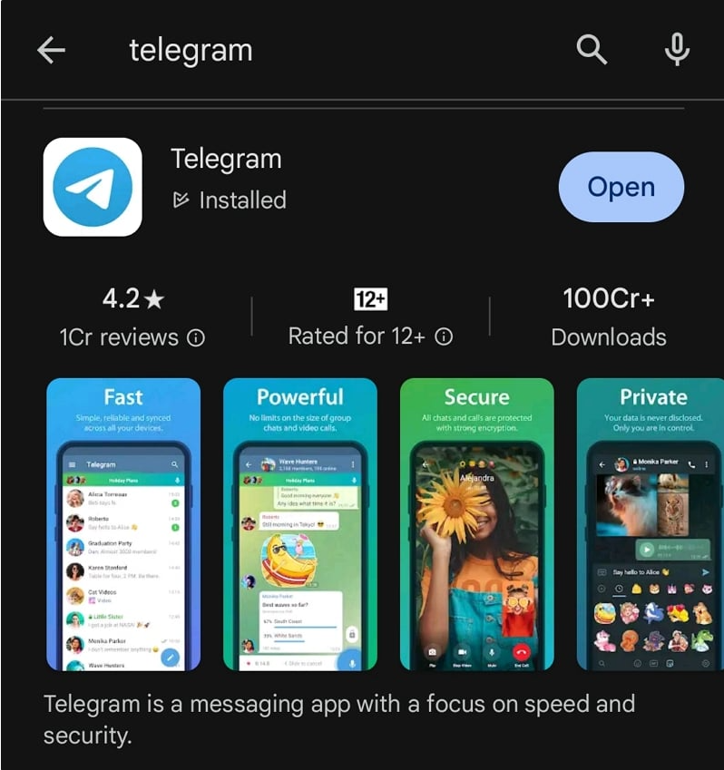

Telegram 连接时卡住：终极修复指南
Telegram 是 WhatsApp 的绝佳替代品，在某些隐私功能方面甚至更好。 WhatsApp 以其他名称引入了许多使 Telegram 独一无二的功能，例如频道。尽管 Telegram 因其功能和服务而享有盛誉，但有时也会出现问题。
当我们在移动设备上打开 Telegram 时，我们会在屏幕顶部看到连接状态，该状态会在一瞬间消失。它表明您的设备正在通过互联网连接到 Telegram 服务器。有时需要很长时间才能建立与服务器的连接，并且我们不断地看到连接状态。
Telegram 似乎停留在“正在连接”状态。在本指南中，我们将向您展示一些连接 Telegram 并正常使用它与朋友和家人联系的解决方案。
如何修复 Telegram 连接时卡住的问题
如果您在 Telegram 上陷入连接状态，请使用以下修复程序来解决该问题并使用 Telegram。
确保您有稳定的互联网连接
使用 Telegram 必须有稳定的互联网连接，因为它依赖互联网连接到服务器。如果您没有稳定的互联网连接，您会反复看到连接状态。从移动数据切换到 WiFi 连接，反之亦然，看看是否有帮助。
检查 Telegram 是否已关闭或无法工作
我们知道 Telegram 只能在互联网上使用。在互联网的帮助下，您的设备连接到 Telegram 的服务器，其中存储了您的所有聊天数据。连接状态表明您的移动设备已连接到 Telegram 服务器。如果服务器出现问题或者连接中断，我们可以随时看到连接状态。
前往DownDetector网站，搜索 Telegram，然后查看 Telegram 是否存在任何问题。如果报告出现中断，请等待一段时间，直到 Telegram 团队解决问题。如果没有，请按照以下解决方案操作。
更新电报

Telegram 之前的更新可能存在错误，导致连接状态有时会卡住。检查 Google Play 商店中是否有适用于 Telegram 的更新并安装。此次更新将解决该问题并让您正常使用 Telegram。
要在 Android 上更新 Telegram，
打开 Google Play 商店并搜索 Telegram
点击结果中的 Telegram。
如果有可用更新，您将看到“更新” 按钮。如果没有，您将看到“打开” 按钮。
点击 “更新”按钮安装更新并完成
要在 iOS 上更新 Telegram，
打开 App Store 并搜索 Telegram
点击结果中的 Telegram，打开 Telegram 应用程序页面，然后单击“更新”按钮
在 Telegram 上注销并重新登录
简单的注销并重新登录就可以解决我们看到的基本问题。注销您在 Telegram 上的帐户，然后使用相同的手机号码或电子邮件重新登录。要注销 Telegram，请点击 Telegram 顶部的汉堡菜单，然后单击个人资料图片。现在，向上滚动个人资料图片以查看个人资料详细信息，然后点击屏幕左上角的三点按钮。点击 注销。
现在，使用相同的号码再次登录 Telegram，看看问题是否已解决。
禁用日期保护程序或低数据模式
如果您在 Android 设备上打开了数据保护程序，这可能会导致 Telegram 卡在连接上。您需要禁用它才能正常使用 Telegram。要将其关闭，请转至 “设置”应用程序> 连接 > 数据使用情况 > 数据保护程序。
同样，在 iOS 上，如果您启用了低数据模式，则可能会遇到此问题。前往 “设置”>“蜂窝网络”>“蜂窝数据选项”，然后关闭“低数据模式”。
检查您的设备存储空间
确保您的设备有足够的存储空间来保存新文件、缓存以及在您使用设备上的应用程序时自动保存的其他数据。如果您的设备存储空间不足，您会在 Telegram 上看到连接问题，因为由于存储限制，它无法保存新的缓存数据。删除不必要的文件，卸载不再使用的应用程序，并释放设备上的一些空间来解决问题。
在路由器上禁用 IPv6
IPv6 是为取代 IPv4 协议而开发的高级协议。从 IPv4 到 IPv6 协议仍处于过渡阶段。如果您的路由器启用了 IPv6 协议，如果服务器端的连接是 IPv4，则可能会导致连接状态挂起。为了避免这种情况，您必须在路由器的配置页面上停用 IPv6 协议。
要在路由器配置页面中禁用 IPv6，
在您的设备上打开网络浏览器。在此之前，请确保您已连接到要禁用 IPv6 协议的路由器的 WiFi。
输入路由器配置地址，您可以在路由器的用户手册中找到该地址，或者使用路由器制造商的名称在互联网上搜索。
使用路由器标签上的用户名和密码登录。
在“高级”或“网络设置”下，您将在“WAN”选项卡下看到 IPv6 设置。
点击IPv6或 启用 IPv6旁边的复选框 将其禁用。
单击 “保存”保存更改并重新启动路由器。
笔记：
每个路由器制造商的说法可能有所不同。所有过程都是相同的。在某些路由器上，您可能会直接在侧边栏、“高级”选项卡下或“网络设置”中找到 IPv6。
清除 Telegram 应用程序的缓存
损坏的应用程序缓存可能会导致相应应用程序的功能出现许多问题。 Telegram 应用程序也不例外。 Telegram 的缓存可能已损坏，导致连接状态挂起。清除 Telegram 应用程序缓存以解决问题并正常连接到 Telegram。
要清除 Android 上的 Telegram 缓存，
打开 “设置” 应用程序
点击 “应用程序” 选项卡
向下滚动并 在已安装的应用程序列表中找到Telegram并点击它
现在，点击Telegram 的应用程序信息页面上的存储
在 “存储”页面上，点击 屏幕底部的“清除缓存” 。
看看它是否已经解决了问题。
禁用VPN
如果您通过 VPN 使用 Telegram 来隐藏您的 IP，最好通过在 VPN 设置中启用分割隧道来从 VPN 中禁用或排除 Telegram。 Telegram 在俄罗斯和巴西等国家被禁止，在使用 Telegram 进行革命的国家也经常面临临时禁令。
如果您连接到来自 Telegram 面临审查或禁令的国家/地区的服务器，您可能会看到此问题。连接到 Telegram 工作正常的服务器，或禁用 VPN 来解决问题。
重新安装电报
如果上述解决方案无法解决问题，您需要从设备中卸载 Telegram 应用程序，然后从 Google Play Store 或 App Store 重新安装。在 Android 上，按住应用程序列表中的 Telegram 图标几秒钟，然后点击“卸载”以从设备中完全删除该应用程序。现在打开 Google Play 商店，搜索 Telegram 并单击Install。
在 iOS 设备上，点击并按住 Telegram 应用程序几秒钟，然后选择删除应用程序。然后，前往 App Store，搜索 Telegram，然后点击“获取”按钮。
使用您的手机号码登录并查看问题是否已解决。如果没有任何效果，您需要联系Telegram 支持，让他们为您解决问题。
电报未连接
如果您发现手机上的 Telegram 应用程序卡在连接状态或无法连接到互联网，您可以通过检查互联网连接状态、检查 Telegram 服务器状态、禁用 VPN、禁用 IPv6 协议轻松解决问题等。按照上面解释的方法并解决 Telegram 应用程序中的连接问题。
有关如何修复 Telegram 连接时卡住的常见问题解答
1. 为什么 Telegram 一直卡在联系状态？
Telegram 只能通过使用互联网连接到其服务器来工作。如果您这边的互联网或 Telegram 那边的服务器存在问题，您会看到此问题。您可以通过修复网络问题或等待 Telegram 团队修复他们这边的问题来轻松修复它。
2. 如何解决iPhone中的Telegram连接问题？
如果您在 iPhone 上看到 Telegram 连接问题，请从移动数据切换到 WiFi，反之亦然，看看是否有帮助。确保互联网工作正常。清除 Telegram 应用程序的缓存，将其更新到最新版本，看看是否有助于解决问题。
3. 为什么我的 Telegram 突然无法使用？
如果 Telegram 突然停止工作，则您的互联网连接可能存在问题。首先检查互联网连接是否正常。然后检查Telegram页面是否有问题。可能是停机导致了该问题。您必须等待 Telegram 团队解决问题。如果互联网连接正常并且 Telegram 没有问题，您需要更新 Telegram 应用程序，检查设备上是否有足够的存储空间，清除缓存并在必要时重新安装 Telegram 应用程序。